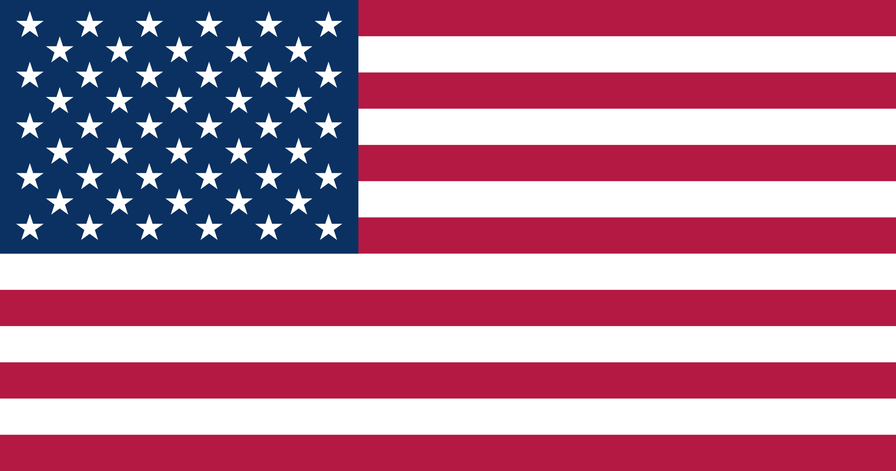
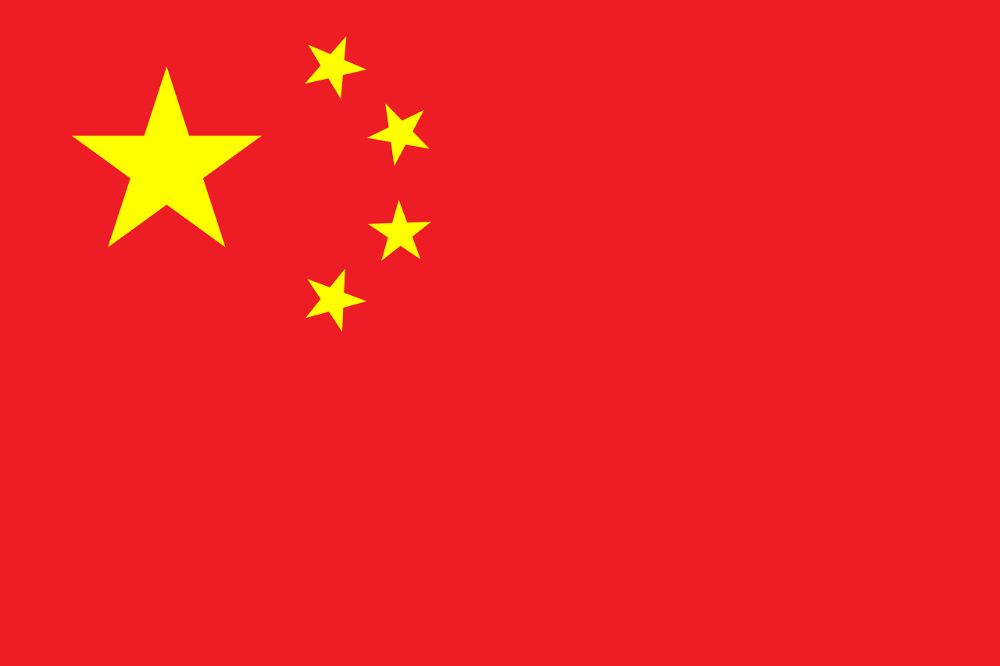
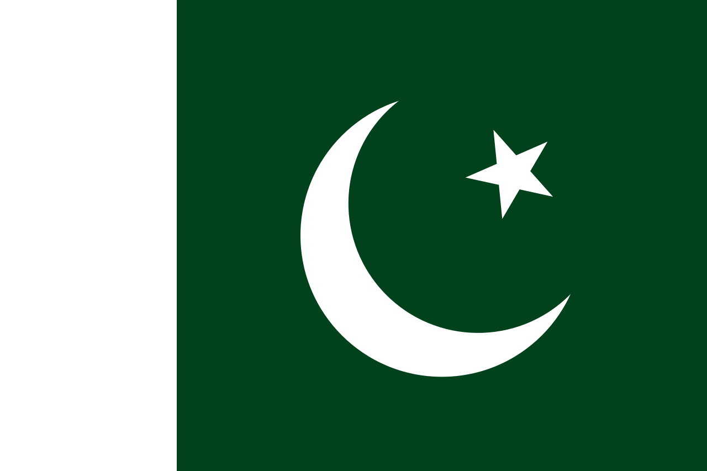
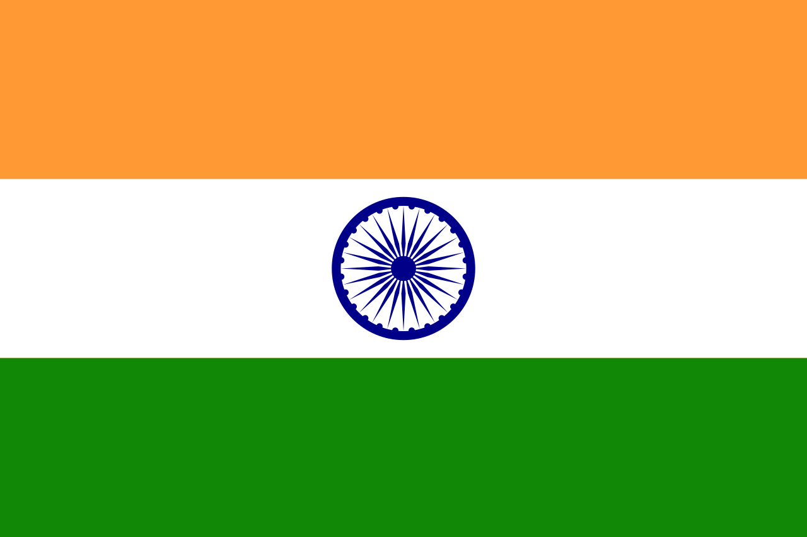
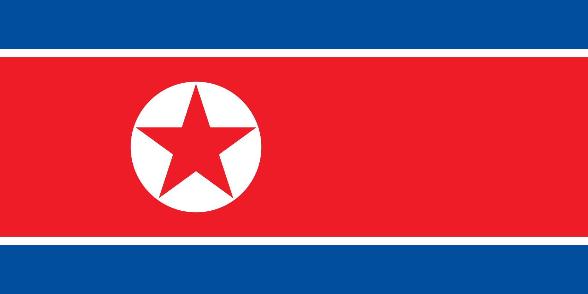
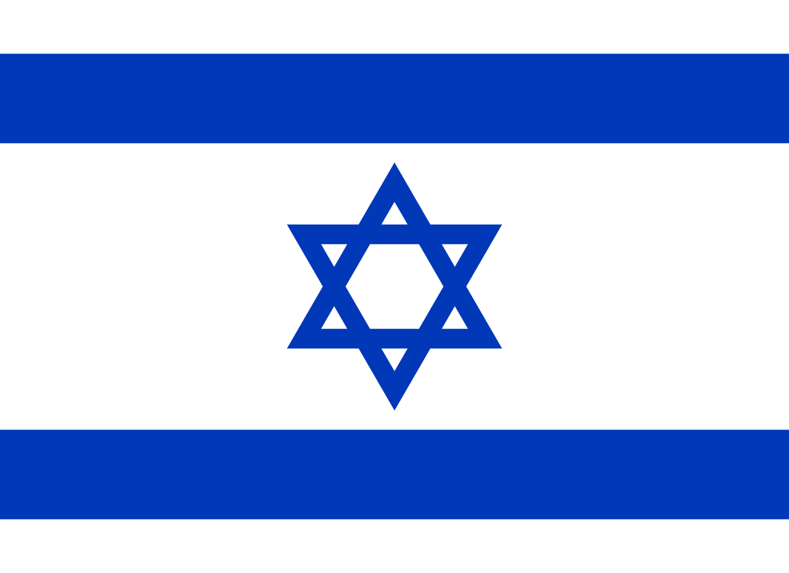

There are no shortages of reasons as to why nuclear energy is a bad idea. The following are some striking facts and statistics why this self-appointed panacea is trying to fool you.
It is way more expensive than you think.
Image credits: Max Roser on Wikipedia ("Our World In Data")
Most people don't believe this when they hear it. Most have been fed the same lines: "Cheap!" "Cheap!" Is it? Let's take a look.
When one does not only get their information from science subreddits,one may actually find factual information which subverts the nuclear narrative. For example, the price, which is not as cheap as everyone thinks, is a big item. According to Rae Corelli of Maclean's, nuclear energy costs more money on average when the unit prices of different forms of energy are considered. Corelli's findings may be extrapolated further using math. In general, energy efficiency is measured in kilowatt-hours (kWh). The University of Michigan reports that the kWh cost of nuclear is about $8.17, which is a 51% increase when compared to natural gas ($3.99), 89% more expensive than coal, 98% more expensive than natural gas, and 85% more expensive than petroleum coke. Additionally, the mining and extraction of uranium is very expensive. In fact, the US Department of Energy estimates uranium mining costs $67.10 per pound—now think of how much of that is needed to power all the great many nuclear reactors we want to prop up everywhere. For reference, coal costs $32 per ton, hydroelectricity still remainsthe cheapest form of energy per kWh (unlike uranium and plutonium, rivers won't give you cancer when you go near them),
Some of the most affected people don't support it.
Image credits: 保守 on Wikipedia
All too often, you may hear "Everyone supports it! It's already the future!" ...Positive?
A common argument is that nuclear energy will help bring equality by facilitating clean, renewable energy to disenfranchised and poor communities across the planet. Unfortunately, many of these people don't even want what we're selling. According to a study done in Singapore, many people in East and Southeast Asia — two regions which consist of a decent chunk of the human race — public opinion of nuclear energy is actually quite poor. Many of the places named in the study include up-and-coming developing nations rising in global influence where the population lives very close. Urban areas are frequently the homes of nuclear power planets because they can reach the most people with the least amount of distance. However, most of the urban areas in this part of the world are very densely-packed and cannot risk a meltdown, which, consequently, would negatively affect the most amount of people at once. Places such as Manila in the Philippines and Bangkok in Thailand are some of the most crowded places on Earth, and if nuclear reactors are placed there in good quantity, that could spell disaster. Areas such as Singapore are so small and so dense that the zone of impact by a meltdown is quite frankly the size of Singapore itself.
Bottom line is, it is not up to us as Westerners living in clean, safe democracies to be the "liberators" of developing nations who need our help. We should inspire change in them and give aid when it is needed, but they must develop by themselves instead of relying on a form of energy that is A) unwanted, and B) controversial at best. Who are we to force this on them, lest they be called anti-human?
It will greatly endanger those overseas.
Image credits: Hossein Heidarpour on Wikipedia (CC BY-SA 4.0)
We want to put reactors overseas because we think it helps. It can hurt as much as it helps.
Another argument is that if we place these reactors in developing nations, it will provide them with unlimited green energy. However, according to 2004's Republican Platform, many countries which started out with nuclear energy for peaceful purposes ended up weaponizing and distributing this. The act of spreading or distributing something is called proliferation, and when done with nuclear technology, is called nuclear proliferation. Unsurprisingly, this matter is paramount to the safety of Earth and should only be done after being thoroughly announced to the world beforehand, no matter what "axis" of the world one is on. Here are some notable examples. (Please note that not all of the info is 100% accurate. Government information on nuclear programs tends to be secretive stuff.)
Terrorist states like Libya and Iraq were entrusted with nuclear power to deliver free, clean, and efficient energy for their people and to develop it for peaceful purposes, enhacing technology and using it offensively only when the existence of their very state felt threatened. However, this basic international trust went sour near-instantly and states will threaten another's men, women, and children with nuclear hellfire for even the most basic, childish insults. Is this what we want to spread to unstable parts of the world? Can we trust these places with this technology? It is an uncomfortable and disheartening question, but nonetheless is one which must be asked to keep millions safe.
Country Date of first use of NE Date of first nuclear weapon Did they proliferate? United States 1951 July 1945 Yes (NATO) Soviet Union / Russia 1954 August 1949 Yes (Communist Bloc)  United Kingdom
United Kingdom1956 October 1952 No France 1964 February 1960 Yes (Israel) China 1984 October 1964 No Pakistan 1972 May 1998 Yes (North Korea) India 1969 May 1974 No North Korea 1980 October 2006 Yes (Libya) Israel 1960 December 1966 Yes (South Africa)  Iran
Iran1987 2011 (??) No
It could greatly contribute to terrorism.
Image credits: Public domain on Wikipedia (Jordanian archives)
We have a rosy idea that it will bring prosperity, but it could bring the opposite.
Many nations hostile to the US and Western world harness nuclear power. While it is totally within these nations' rights to have this power, it is frequently not within their neighbors' best interests. This also goes for the West, too. No matter what part of the world one is from, most do not feel safe with nukes in their backyard or being dragged into World War Three simply because their house was slightly too close. Savage dictators who run many of these states engage in saber rattling once a week; this is normally not a concern, however, when nukes are added into the mix, these threats become more serious. For example, Pakistani scientist A.Q. Khan was the lead nuclear scientist in Pakistan in the later Cold War. According to the American Federation of Scientists (which, by the way, was directly founded by the people who worked on the first nuke ever built), Khan, after having visited Europe, stole nuclear information and brought it back to his home nation of Pakistan. Khan later distributed this information for profit to any rogue state willing to buy, including Kim Il-sung's North Korea, later Gaddafi's Libya, and who knows who else. This also goes for the West as well, who was responsible for distributing weapons of mass destruction to places like Iraq, which the Western public is looking at as increasingly wrong by the day.
The pont is not that these countries can't pursue their own internal and defensive policies. The point is that when these actions dip into the "weapons of mass destruction" territory, they become immoral and ought not be pursued in the first place. Truthfully, do we feel safe with states like Pakistan, Libya, and Syria having WMDs? After all, they were initially trusted with nuclear power, yet it was spread to every terrorist group around the corner. After the collapse of the Syrian government, several terrorist groups came in possession of the Assad regime's WMDs, such as ISIS, Hamas, Hezbollah, and all the other horsemen. With the rise of terrorism around the world, what's to stop one of these groups from acquiring a WMD gone astray and leveraging it against an entire country? In fact, do we even feel safe with the US owning nukes? Do we feel safe with anyone possessing them? Letting these rogue states even have the potential of having any sort of WMD, let alone nuclear, is like letting the guy dressed up as a criminal near the diamond store and doing nothing about it because "he hasn't done anything yet". I'm sorry, but we're not doing that.